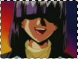
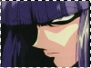
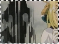

» Information ::: What is a Mazoku?-----------------------------------------------------------
The word Mazoku means, demon (ma) race (zoku). Yes, that in turn means that Xelloss of the demon race, aka a demon. Demons thrive on other people's negative emotions and feeds on them for pleasure. The humans' negative emotions are what keeps them alive and going. Demons do not drink or eat normal food, their food is the negative energy. XD Being a Mazoku(demon) also means that they can assemble any shape or form of a being, whether it's an animal, human, monster, etc. This is because mazoku are purely evil beings/spirits, not human. Xelloss, obviously, chose the human form of a male. But he is neither female or male, because mazoku do not have a gender.
What Lina and the others see in the physical world is not the real Xelloss, but a chosen form that Xelloss assembled to look like a human so he may blend in with the crowd. Xelloss's real form is on the Astral Plain, which is a demention in which the Mazoku reside in. It is spread across the entire Earth (maybe more), with neither a starting place or an ending place. Normal magic or elemental magic does not hurt Xelloss, because the form he assembles in the physical world is not his real form, and therefore those spells cannot inflict physical damage on him. Spirit magic, such as Elmekia Lance, can hurt smaller ranked Mazoku, but since Xelloss is a far higher ranked Mazoku, such magic doesn't effect him either. The only spells that *can* affect him are spells that call upon the Lord of Nightmares, the most power Mazoku of all. Of course, there's also the Hikari no Ken, or the Sword of Light. The Sword of Light has the ability to damage even higher ranked Mazoku, depending on how it's used. The Sword of Light can effect spirits in another demention, therefore the Mazoku can actually be destroyed on the Astral Plain if the Sword slices through it's appearance in the physical world. Xelloss has been severely wounded by the Sword of Light in Valgarv's hands. x.x So how else does Xelloss get hurt? Of course, by other Mazoku's power. You see, each individual Mazoku has the ability to use all sorts of magic, but in addition, they have their own power. Xelloss's own power is creating black orbs of energy. He can manipulate them into spikes or any other kinds of shapes. If it comes down to it, Mazoku may hurt others of its own race in order to get what they want.
Mazoku have a easier time moving about the country, for they use teleportation. since the Astral Plain stretches far and wide, Xelloss can get from one place to another in seconds. All he has to do is pull himself back to the Astral Plain and then drop his form elsewhere in the physical world. This is how Xelloss can appear and disappear whenever and whereever he wants, that's how he appears on top of buildings and poles sometimes. XD He can obviously hear Lina's calls from the Astral Plain, because he appeared once upon her call (just to tell her he doesn't come every time she calls him before disappearing almost instantly XD). As plainly seen, this is a very convenient way for Mazoku to move about.^^
When Mazoku get hurt, it appears as if they literally got a piece torn off of them. Xelloss has been hurt several times throughout the series, and he would disappear to the Astral Plain to heal his wound by regenerating. Of course, this takes some time, but when he's done you can't even tell he's been hurt. XD
<<
return